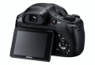

器材库 > 不可换镜头数码相机 > DSC-HX350

规格总览
发布日期
2016-12-21
厂家推荐价格
2,499.00 （人民币）
影像规格
影像传感器
Exmor R CMOS
影像传感器尺寸
1/2.3英寸
有效像素
2040万
影像处理器
BIONZ X
防抖系统
光学防抖
镜头和对焦
镜头结构
15片/10组
非球面镜片
3片
低/超低色散镜片
3片
焦距
4.3mm-215mm
等效35mm画幅焦距
24mm-1200mm
最大光圈
f/2.8-6.3
光学变焦
50倍
对焦模式
单次AF/半手动/手动对焦/连续AF（仅限高级运动拍摄和动态影像时）
手动对焦
支持
曝光控制
测光模式
点测光, 多重测光, 中心测光
场景模式
高感光度/夜景/手持夜景/夜景肖像/风景/肖像/美肤/动作防抖/海滩/雪景/烟火/高级运动拍摄/美食/宠物
快门速度
智能自动 (4 - 1/4000) / 程序自动 (1 - 1/4000) /光圈优先 (8 - 1/2000) / 快门优先(30 - 1/4000) / 手动(30 - 1/4000)
曝光补偿
±2EV以1/3EV级调整
ISO感光度
自动(ISO 80-3200),80/100/125/160/200/250/320/400/500/640/800/1000/1250/1600/2000/2500/3200 多帧降噪 自动(ISO80-3200),100/200/400/800/1600/3200/6400/12800
白平衡
自动/日光/阴天/白炽灯/荧光灯（冷白色)/荧光灯（日光白色）/荧光灯（日光）/闪光灯/色温（滤光片）/自定义/自定义设置
自拍
关/10秒/2秒/人像自拍(一个人/双人)
拍摄模式
程序自动/光圈优先/快门优先/手动曝光/调出存储 1,2/动态影像(程序自动,光圈优先,快门优先,手动曝光)/智能扫描全景/场景选择/智能自动/增强自动
创意滤镜
静态影像：玩具相机/流行色彩/分色/复古照片/柔光亮调/局部彩色/强反差单色/柔焦/HDR绘画/丰富色调黑白/微缩景观/水彩画/插图 动态影像：玩具相机/流行色彩/分色/复古照片/柔光亮调/局部彩色/强反差单色
取景规格
LCD尺寸
3.0英寸
LCD像素
92万
LCD特性
翻转屏
文件输入/输出
存储卡
MS/MS PRO记忆棒, SD/SDHC, SDXC
数据接口
USB2.0
电源
电池
NP-BX1
外观
颜色
黑色
尺寸
129.6×93.2×103.2mm
该产品暂无存档的网友点评
产品图 / 样片
DSC-HX350
DSC-HX350